As Horizon Media took over search platform ownership from DeVry, I conducted an analysis based on semantic keyword matching to identify keyword and URL changes that would drive immediate efficiency gains
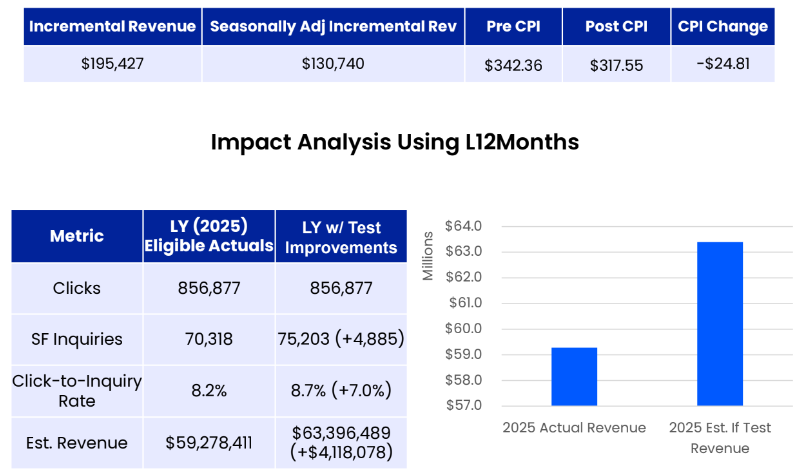
A 3 step approach was used to identify keyword and URL changes that I expected to drive incremental revenue
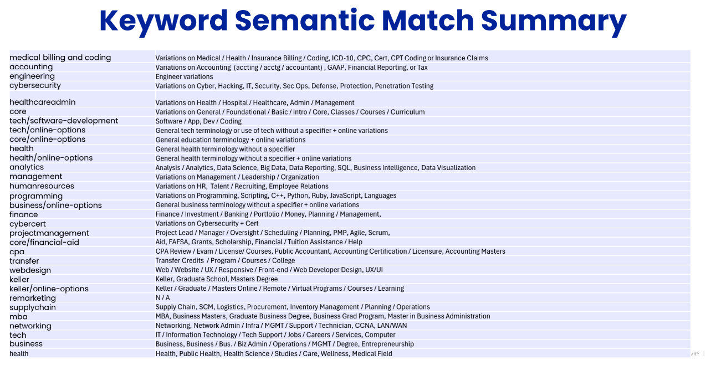
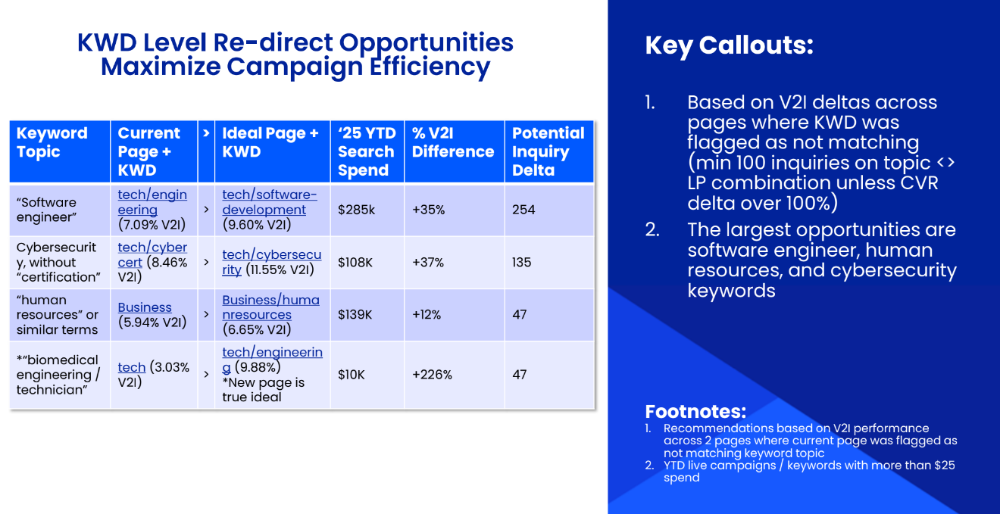
In 2025, 4 specific topics were being directed to mismatched landing pages:
I also saw 4 broader sets of terms that appeared to outperform on logical substitutes
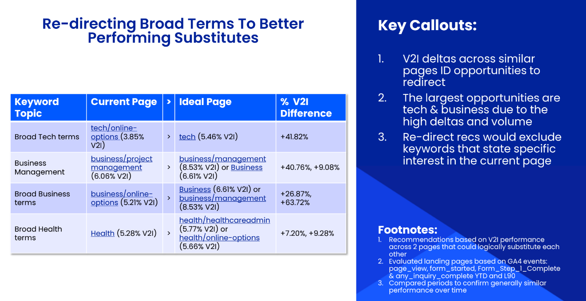
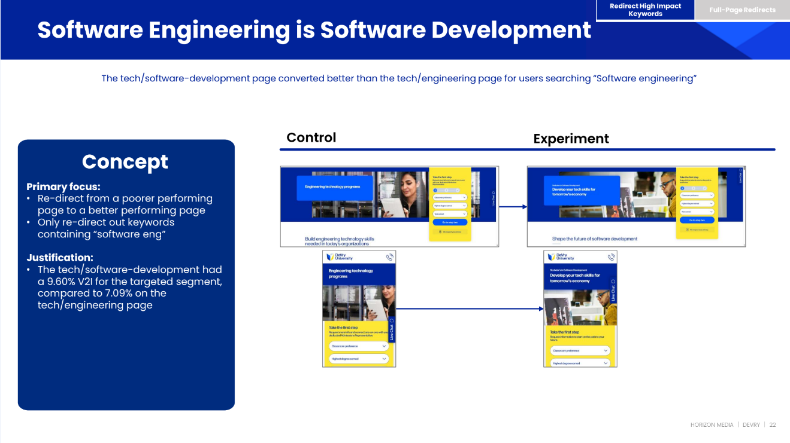
For each test, I outlined the specific keywords and current destination URLs so opportunities could be identified in Google and Bing search platforms as well as ideal destinations
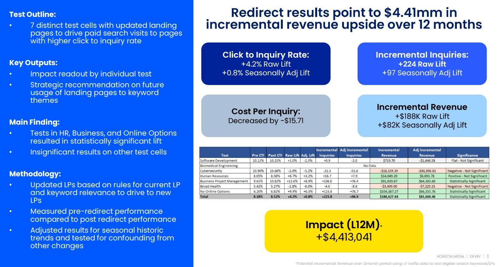
I measured KPIs 30 days over 30 days, accounting for seasonality by adjusting against campaigns where changes had not been made and only evaluated impact where deltas were statistically significant
Directing HR keywords to the HR page led to a 6.7% increase in on-page conversion rate and only a 2% CPC increase despite a 55% increase in spend
This demonstrates that the content not only better met user expectations, but that search platforms also identified the LP as a superior destination
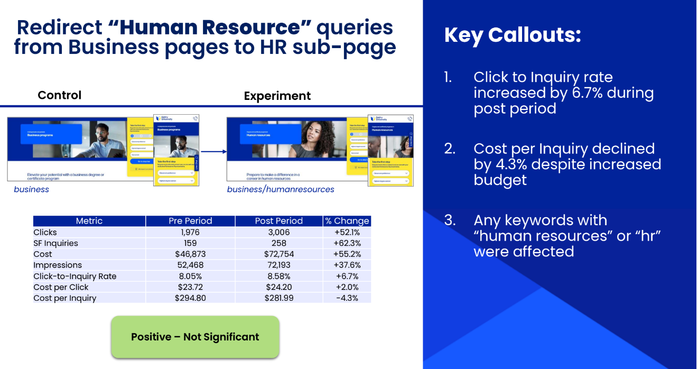
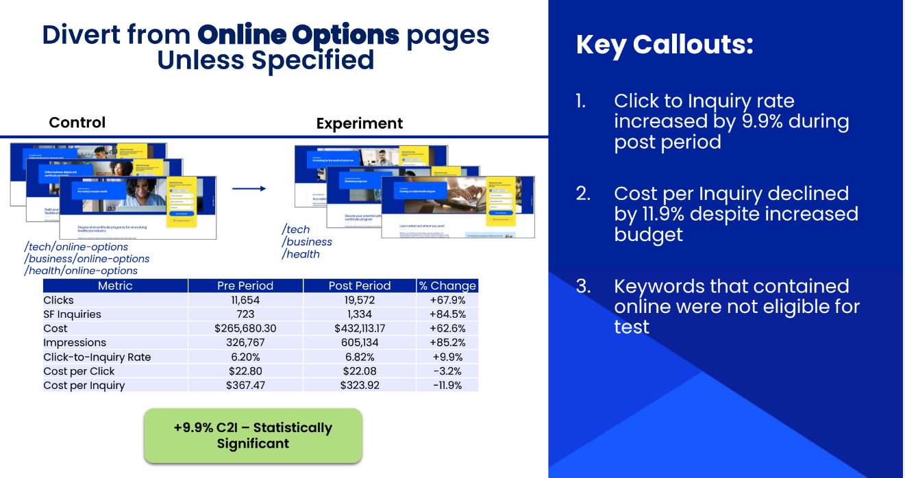
Lastly, broader redirects off of online pages onto more topic-focused content was the most impactful change
We found that while online options were important for users, dedicating too much page content displaced valuable content on the actual degrees, acquired skills and their value
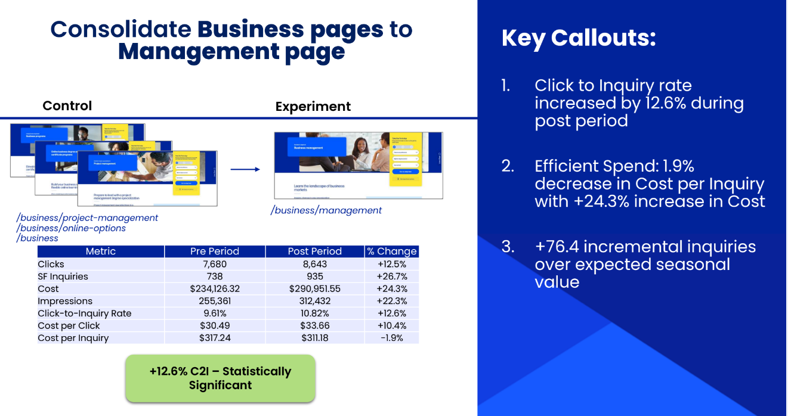
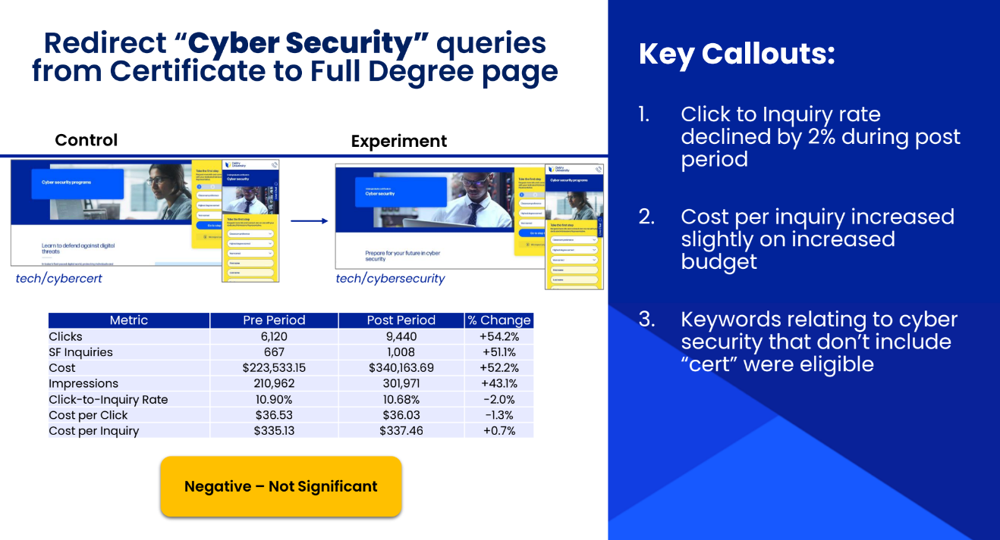
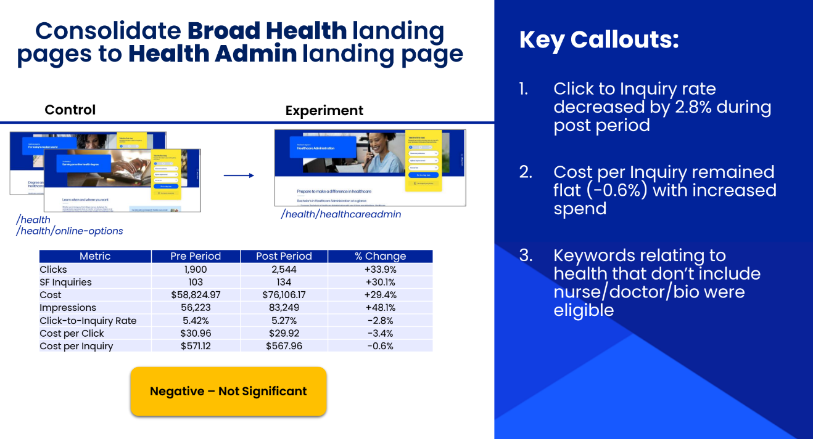
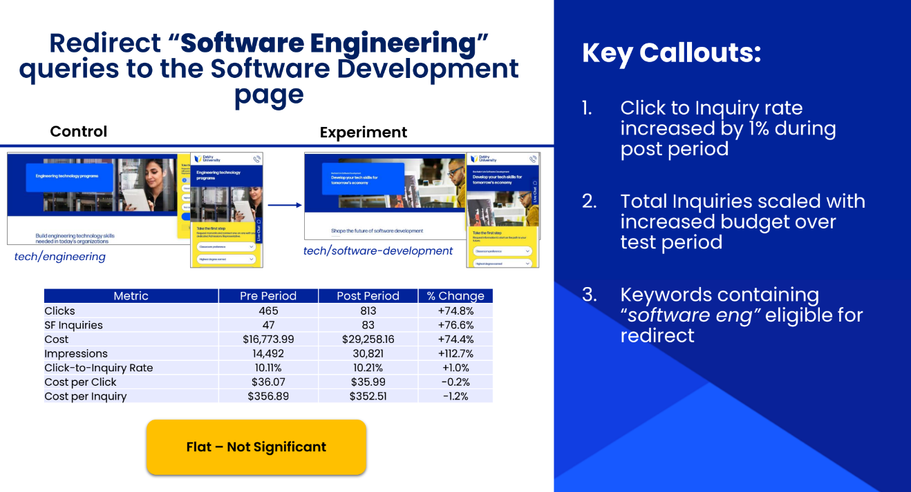